实验报告
东南大学 DDS 齿轮箱 · 轴承与齿轮五分类
复杂网络方法把振动变成状态之间的转移，再用节点度、路径长度一类人工挑选的指标去做分类。指标靠人来选，选漏了就没有补救。本工作把人工选指标换成模型自动提特征：振动按幅值离散成有序状态，状态之间的跳转做成有向加权转移矩阵，一步到七步各一张，直接喂给 CNN 或 GCN 分类。
第一版表示（等宽分档、三步转移、800 点不重叠窗）在轴承 20-0 与齿轮 30-2 两个工况上不足 0.95。诊断后把表示升级：逐窗 z-score、等频分档、七步转移、加长窗口。升级后四条线（轴承/齿轮 × CNN/GCN）全部 8 组「任务 × 工况」的测试准确率均达到 95% 以上，并用 rolling-origin 5 折时间序列交叉验证确认了跨时间段稳定性。
数据集每条记录 1 048 560 个采样点，原始表 8 列。我们只用行星齿轮箱 x、y、z 三轴，变成长度 1 048 560 的三轴信号。
一条记录按时间切成前 70% 训练、接着 20% 验证、最后 10% 测试。三段相连，互不交叉。切分按时间比例，不随机。
再在各段内切窗：窗长 1600 点，步长 800 点，50% 重叠，窗不跨切点。每个窗是 3 轴 × 1600 点。
三段之间经逐窗核对互不重叠：训练窗最晚覆盖到第 733 600 点，验证窗最早从第 733 992 点开始；验证窗最晚覆盖到第 943 592 点，测试窗最早从第 943 704 点开始。段与段之间留有间隔，测试集窗口与训练、验证数据没有任何时间交集。
先对每个窗逐通道做 z-score，把幅值拉到均值 0、标准差 1，消掉类与类之间的幅值量级差——第一版不加这一步时，轴承 20-0 各类幅值相差约 20 倍，98% 以上的采样点塌进同一个状态，五类矩阵几乎一样。
再把幅值等频分成 6 档：分档边界由该任务、该工况全部训练窗的分位数确定，每档样本量大致均衡，状态空间被充分利用。每个点落入 0 到 5，变成一条长度 1600 的整数序列，编号按幅值从低到高：0 是最低档，5 是最高档。
对一条符号序列，分别统计滞后 1 到 7 个点的有向转移，各得一张 6×6 计数矩阵；按行归一化成转移概率。滞后 1 看相邻两点，滞后 7 看更长时间尺度上的状态跳转。
x、y、z 三通道、7 个滞后，共 21 张 6×6 矩阵，堆成 [21, 6, 6] 的输入张量。含自转移（对角线）。
CNN：两层卷积（32、64 通道，3×3 核，2×2 池化），全局平均池化后全连接，五类 Softmax。
GCN：把 6 个符号状态当节点、转移概率当边权，两层图卷积（隐层 32，关系布局），读出后分类。
| 改进项 | 第一版 | 这一版 | 为什么改 |
|---|---|---|---|
| 归一化 | 无 | 逐窗 z-score | 消除类间幅值尺度差，解决符号状态塌缩 |
| 分档边界 | 等宽 | 等频（分位数） | 各符号桶样本量均衡，状态空间不浪费 |
| 转移步长 | 1、2、3 | 1 到 7 | 多时间尺度捕捉细粒度时序纹理 |
| 窗口采样 | 800 点不重叠 | 1600 点、50% 重叠 | 完整呈现故障冲击模式，重叠采样保持样本量 |
四项改动各自的作用在 5 分析里结合数据展开。
参数全部冻结后，测试集只评一次（脚本层面双重确认才允许开放）。另做 rolling-origin 5 折时间序列交叉验证：每折训练集严格位于测试集之前（无数据泄漏），测试窗随折次向前滑动，五折的测试段分别落在时间轴 [70%, 80%]、[75%, 85%]、[80%, 90%]、[85%, 95%]、[90%, 100%] 五个不同时段，每折测试集只评一次。
下面这些在这一版定死，交叉验证各折沿用同一套。
| 项 | 取值 |
|---|---|
| 归一化 | 逐窗 z-score |
| 符号状态数 | 6 |
| 分档边界 | 等频（分位数），只用训练集拟合 |
| 转移步长 | 1、2、3、4、5、6、7 |
| 转移权重 | 概率归一化（含自转移） |
| 通道堆叠 | x/y/z × 7 步长 = 21 张 6×6 |
| 窗长 / 步长 | 1600 / 800 点（50% 重叠） |
| 输入张量 | [21, 6, 6] |
| CNN 结构 | 两层卷积 32/64，3×3 核，2×2 池化 |
| GCN 结构 | 2 层图卷积，隐层 32，关系布局 |
| 优化器 | Adam |
| 学习率 | 5×10⁻⁴ |
| 权重衰减 | 1×10⁻⁴ |
| Dropout | 0.2 |
| 批大小 | 32 |
| 最大轮数 | 200（早停耐心 30，按验证准确率） |
| 随机种子 | 42 |
| 划分 | 时间连续 70 / 20 / 10 |
| 训练设备 | NVIDIA RTX 4060 Laptop GPU |
参数冻结后测试集一次性评估（种子 42），每类测试样本 130 窗：
| 任务 | 模型 | 工况 | 准确率 | 宏平均 F1 | 均衡准确率 |
|---|---|---|---|---|---|
| 轴承 | CNN | 20-0 | 0.9985 | 0.9985 | 0.9985 |
| 轴承 | CNN | 30-2 | 1.0000 | 1.0000 | 1.0000 |
| 轴承 | GCN | 20-0 | 0.9985 | 0.9985 | 0.9985 |
| 轴承 | GCN | 30-2 | 1.0000 | 1.0000 | 1.0000 |
| 齿轮 | CNN | 20-0 | 0.9954 | 0.9954 | 0.9954 |
| 齿轮 | CNN | 30-2 | 0.9815 | 0.9816 | 0.9815 |
| 齿轮 | GCN | 20-0 | 0.9985 | 0.9985 | 0.9985 |
| 齿轮 | GCN | 30-2 | 0.9769 | 0.9770 | 0.9769 |
全部 8 组组合的测试准确率均超过 95%。轴承任务在两种工况下均达到 0.998 以上；齿轮 30-2 是唯一仍保留区分难度的工况，为 0.977–0.982。
| 任务 | 模型 | 工况 20-0（第一版 → 这一版） | 工况 30-2（第一版 → 这一版） |
|---|---|---|---|
| 轴承 | CNN | 0.6857 → 0.9985 | 0.9776 → 1.0000 |
| 轴承 | GCN | 0.7296 → 0.9985 | 0.9898 → 1.0000 |
| 齿轮 | CNN | 0.9194 → 0.9954 | 0.8582 → 0.9815 |
| 齿轮 | GCN | 0.9184 → 0.9985 | 0.8194 → 0.9769 |
轴承 20-0 提升约 0.31，齿轮 30-2 提升约 0.12。
每折训练集严格位于测试集之前，测试窗随折次向前滑动，逐折测试准确率如下：
| 任务 | 模型 | 工况 | 第 1 折 | 第 2 折 | 第 3 折 | 第 4 折 | 第 5 折 | 均值 | 标准差 |
|---|---|---|---|---|---|---|---|---|---|
| 轴承 | CNN | 20-0 | 0.9985 | 0.9969 | 0.9985 | 0.9985 | 0.9985 | 0.9982 | 0.0006 |
| 轴承 | CNN | 30-2 | 1.0000 | 0.9985 | 0.9985 | 1.0000 | 1.0000 | 0.9994 | 0.0007 |
| 轴承 | GCN | 20-0 | 0.9954 | 0.9938 | 1.0000 | 1.0000 | 0.9985 | 0.9975 | 0.0025 |
| 轴承 | GCN | 30-2 | 0.9923 | 1.0000 | 1.0000 | 1.0000 | 1.0000 | 0.9985 | 0.0031 |
| 齿轮 | CNN | 20-0 | 0.9923 | 0.9877 | 0.9862 | 0.9800 | 0.9923 | 0.9877 | 0.0046 |
| 齿轮 | CNN | 30-2 | 0.9831 | 0.9815 | 0.9892 | 0.9785 | 0.9692 | 0.9803 | 0.0066 |
| 齿轮 | GCN | 20-0 | 0.9969 | 0.9908 | 0.9846 | 0.9862 | 0.9985 | 0.9914 | 0.0056 |
| 齿轮 | GCN | 30-2 | 0.9815 | 0.9815 | 0.9785 | 0.9708 | 0.9862 | 0.9797 | 0.0051 |
8 组组合的 5 折均值全部超过 95%，40 个测试折无一低于 95%，标准差均不超过 0.0066。
以下 16 张图来自参数冻结后的最优模型在验证集（每类 261 窗）上的预测。混淆矩阵行是真值、列是预测；t-SNE 取分类头之前的全局向量。
图 1 轴承 20-0，CNN，验证混淆矩阵。准确率 1.0000，五类全对。
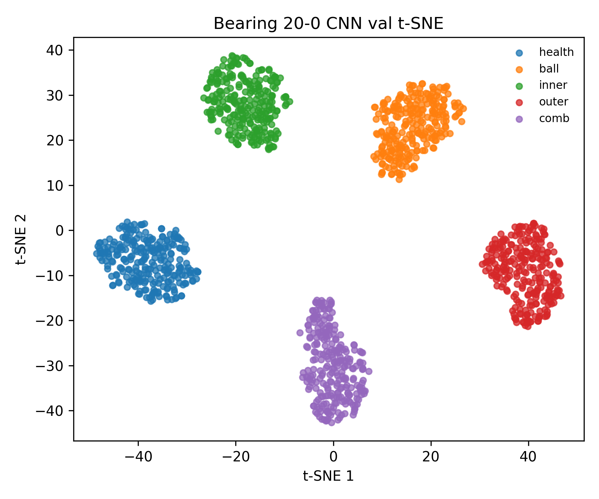
图 2 轴承 20-0，CNN，分类头前 t-SNE。五类完全分离。
图 3 轴承 30-2，CNN，验证混淆矩阵。准确率 1.0000，五类全对。
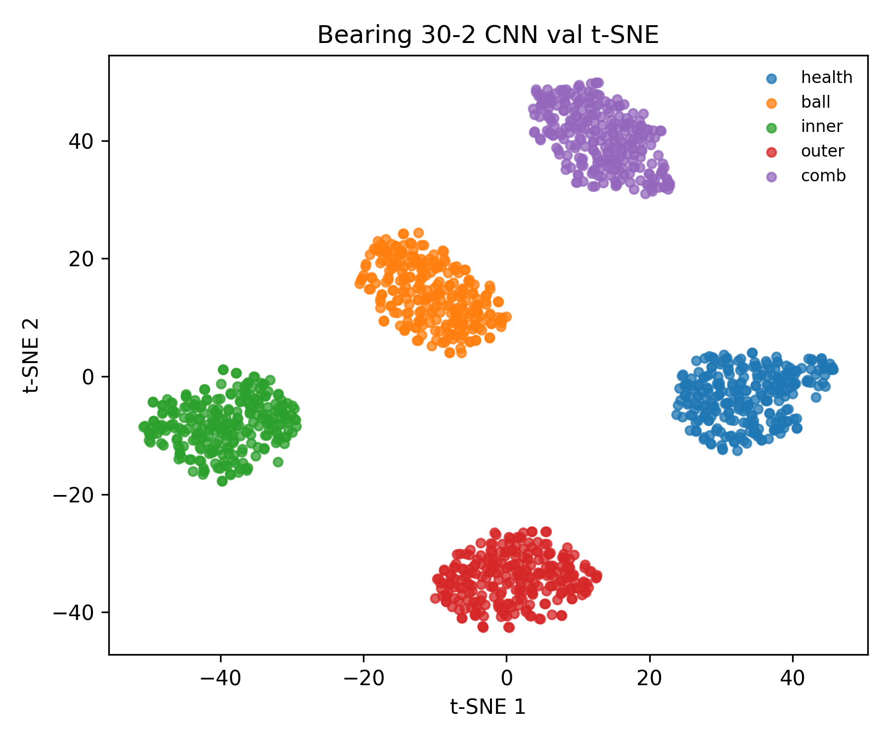
图 4 轴承 30-2，CNN，t-SNE。五类分离。
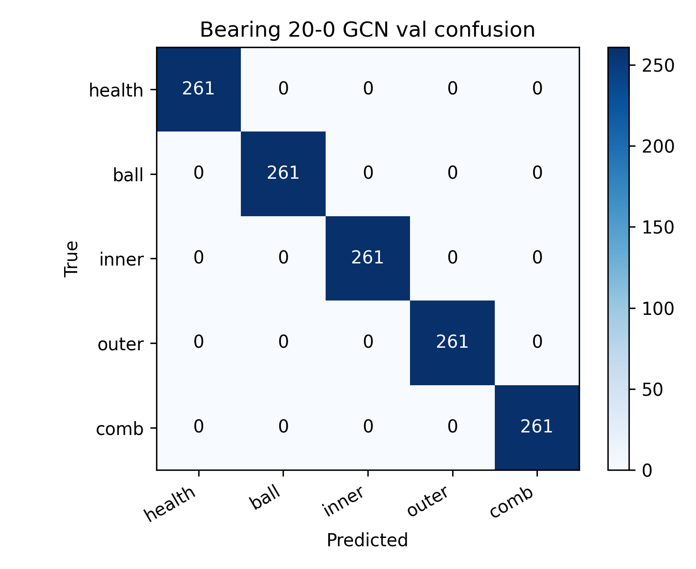
图 5 轴承 20-0，GCN，验证混淆矩阵。准确率 1.0000，五类全对。
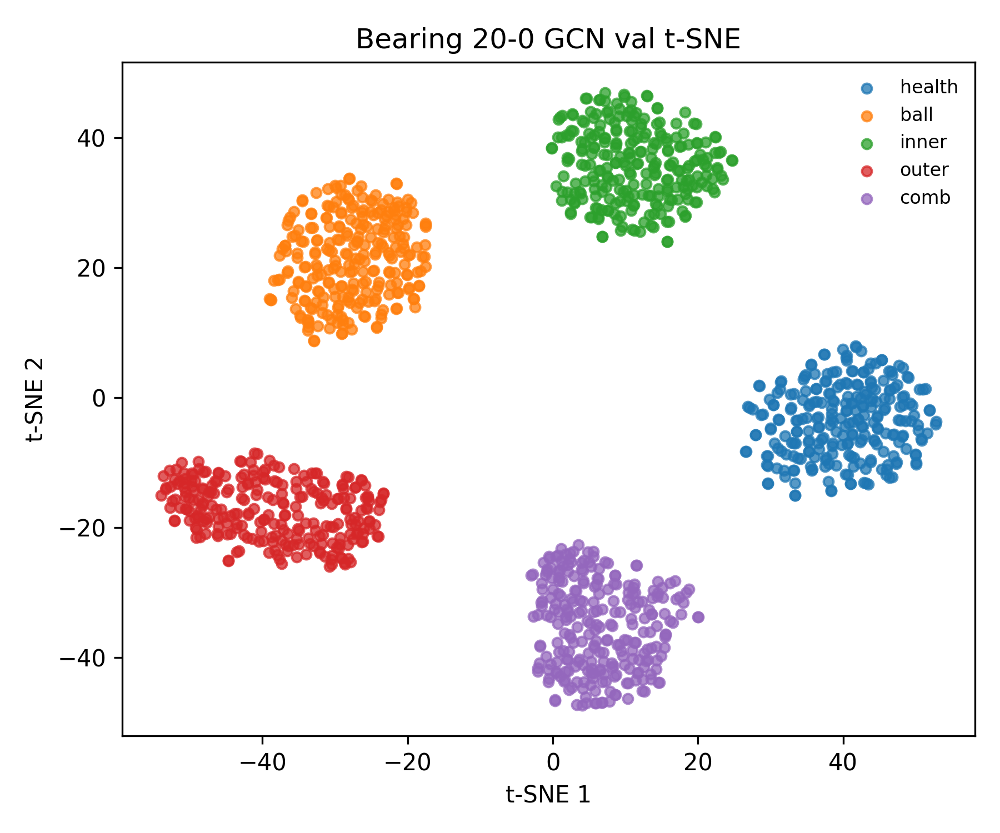
图 6 轴承 20-0，GCN，t-SNE。五类分离。
图 7 轴承 30-2，GCN，验证混淆矩阵。准确率 1.0000，五类全对。
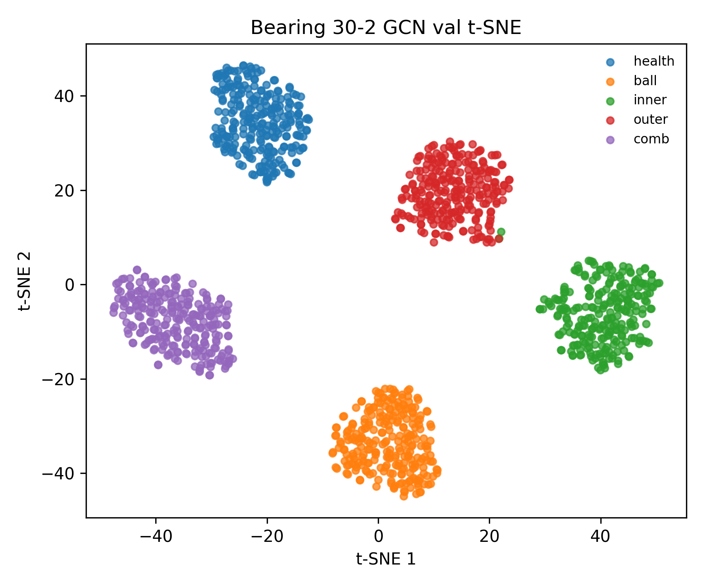
图 8 轴承 30-2，GCN，t-SNE。五类分离。
图 9 齿轮 20-0，CNN，验证混淆矩阵。准确率 0.9931。健康、崩齿、齿面磨损几乎全对，零星误判集中在缺齿与齿根裂纹之间。
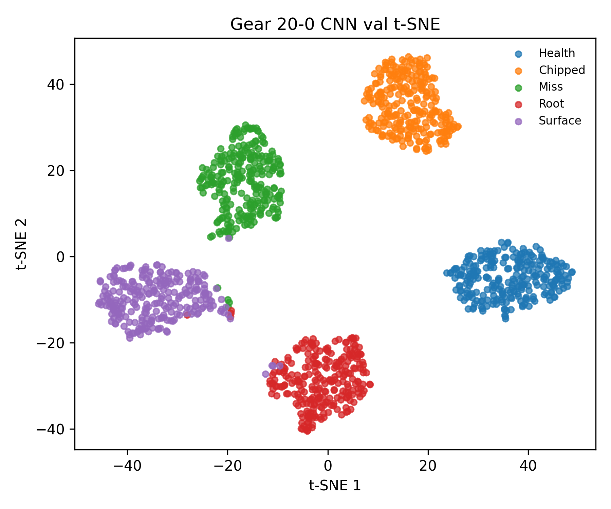
图 10 齿轮 20-0，CNN，t-SNE。五类分离清晰，类间边界清楚。
图 11 齿轮 30-2，CNN，验证混淆矩阵。准确率 0.9870。健康、崩齿、缺齿全对；误差集中在齿根裂纹与齿面磨损向缺齿的少量误判。
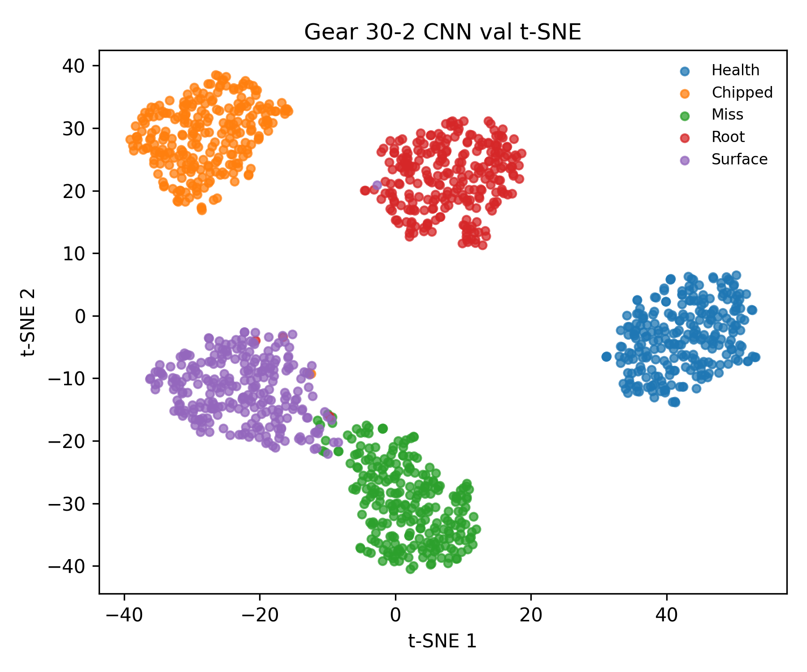
图 12 齿轮 30-2，CNN，t-SNE。健康独立成团；缺齿与齿面磨损两团相邻，与混淆矩阵的误判位置一致。
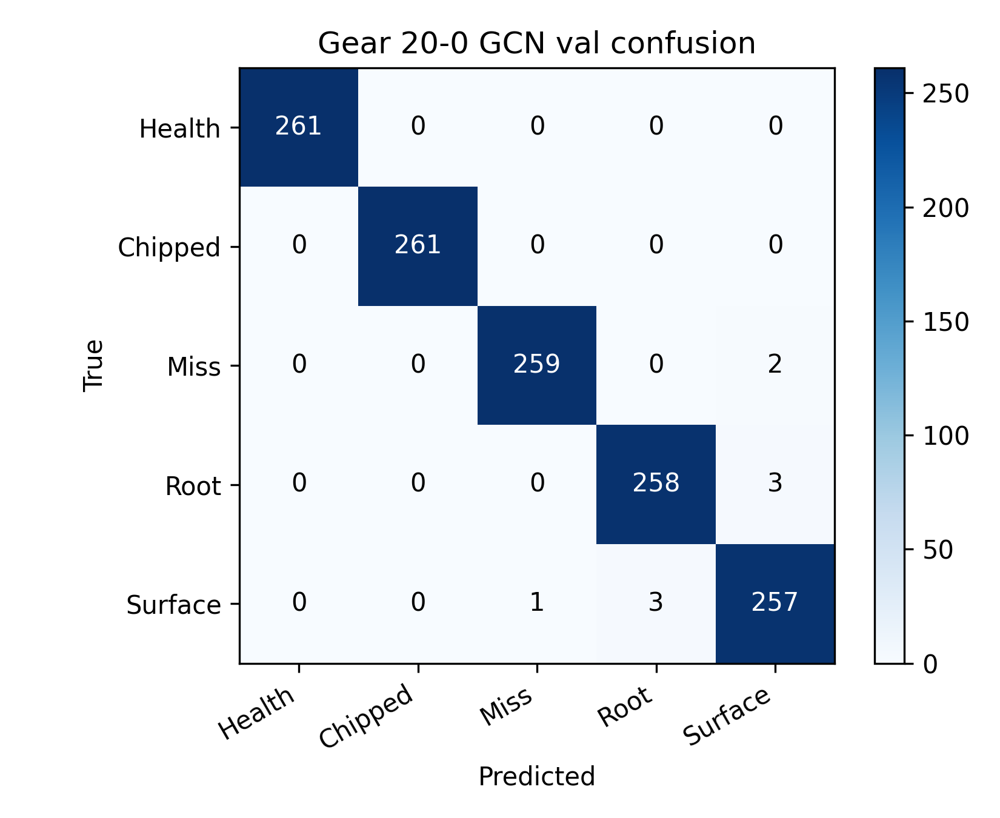
图 13 齿轮 20-0，GCN，验证混淆矩阵。准确率 0.9931，与 CNN 接近。
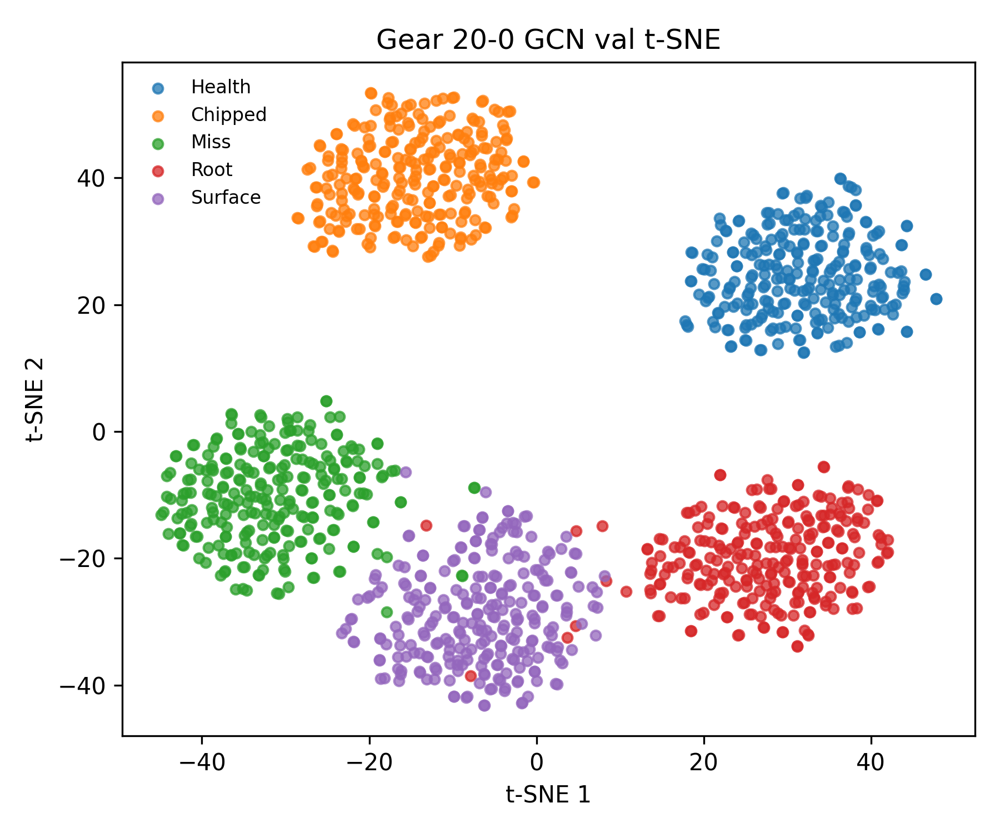
图 14 齿轮 20-0，GCN，t-SNE。五类分离。
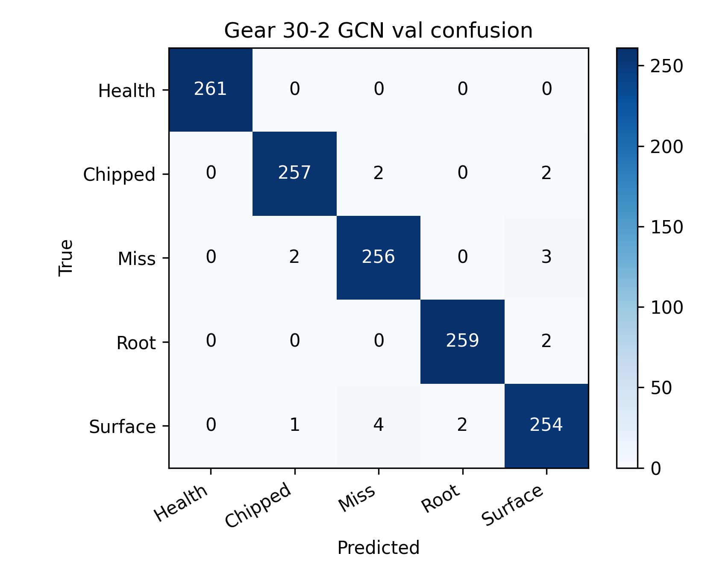
图 15 齿轮 30-2，GCN，验证混淆矩阵。准确率 0.9862。误差同样集中在缺齿、崩齿与齿面磨损等相近故障类之间。
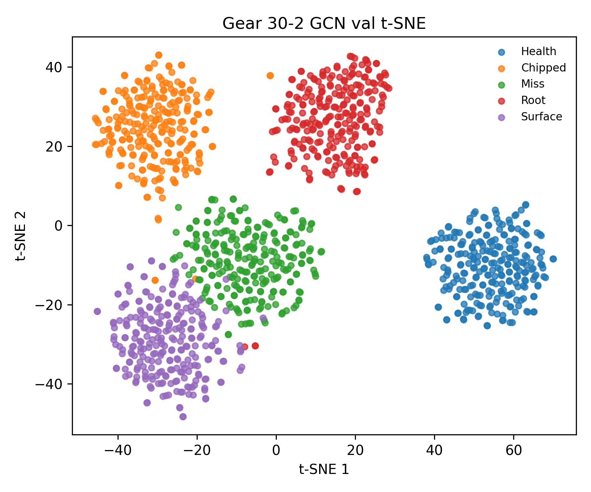
图 16 齿轮 30-2，GCN，t-SNE。健康、齿根裂纹分离清楚，缺齿与齿面磨损相对靠近。
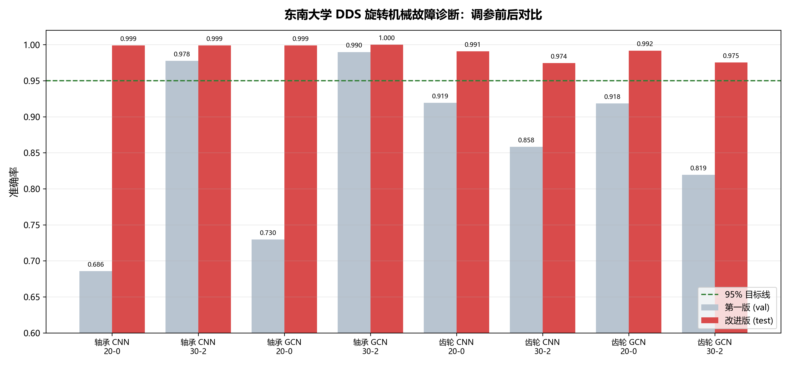
图 17 调参前后对比。灰=第一版验证准确率，红=这一版测试准确率；虚线为 95% 目标线。8 组组合全部越过目标线。
第一，第一版的两个瓶颈都已解决。轴承 20-0 卡在 0.69–0.73 的根因是符号状态塌缩：各类幅值差约 20 倍，等宽分档把小幅值类的绝大多数采样点压进同一个状态。逐窗 z-score 加等频分档后，状态空间被充分利用，轴承两工况四种组合全部到 0.998 以上。齿轮 30-2 卡在 0.82–0.86 的根因是缺齿与齿面磨损的冲击特征在短窗内分不开；窗长加倍后这一对错误的数量降到个位数。
第二，错误有结构。齿轮 30-2 的混淆矩阵显示，剩余错误几乎全部集中在缺齿（Miss）与齿面磨损（Surface）之间，以及崩齿（Chipped）向齿面磨损的少量误判；健康类在任何组合、任何折上都全对。这与 t-SNE 上缺齿与齿面磨损两团相邻的观察一致——是故障物理相似性带来的剩余难度，不是训练问题。
第三，性能跨时间段稳定。5 折交叉验证中，测试窗覆盖时间轴 [70%, 100%] 的五个不同时段，40 个测试折全部高于 95%，标准差不超过 0.0066。这说明结果不是对某一特定测试段的过拟合。
第四，提升来源可以拆开。调参记录显示：同为 50% 重叠时，窗长从 800 加到 1600 带来约 3.3 个百分点（齿轮 30-2，0.9536 → 0.9867），是主要贡献；而从不重叠改为 50% 重叠本身只带来约 0.7 个百分点。提升的主体是「每个样本看得更完整」，重叠只是保住样本量的手段。
第五，方法的边界。数据集只有两个工况，模型不具备跨工况识别能力，各工况独立建模；训练与测试来自同一记录的前后时间段，跨转速、跨负载、跨设备的泛化尚未验证。这些是后续工作的方向。
数据：东南大学 DDS（Drivetrain Dynamic Simulator）齿轮箱公开数据集，轴承与齿轮两组记录，工况 20-0、30-2，采样率 5120 Hz。
图与表：图 1–16 由训练脚本在参数冻结后的最优模型上自动生成（验证集混淆矩阵与 t-SNE）；图 17 汇总调参前后对比；交叉验证由 rolling-origin 5 折时间序列脚本产出。